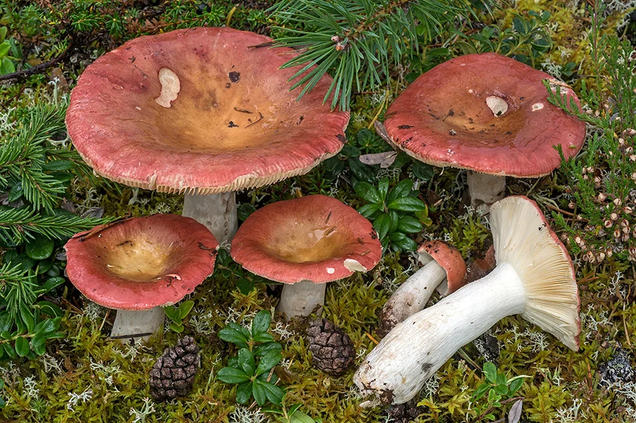

真菌 · 真菌界
大红菌 Russula vinosa

红菇科中菌盖呈深红至紫红色的野生菌，是中国南方山区常见的食用菌，但需与毒红菇区分。
- 分类
- 门担子菌门纲伞菌纲目红菇目科红菇科属红菇属
- 栖息环境
- 壳斗科、松科等林木下的林地，与树木形成外生菌根
- 地理分布
- 中国南方多省及东亚、东南亚林地
- 保护级别
- 未评估；依赖森林与菌根共生
物种志
大红菌的子实体中等大小，菌盖初为半球形，后平展，中央稍下凹，表面深红、紫红或暗红色，潮湿时略带黏性；菌褶白色至乳黄色，菌柄粗壮、白色或带粉色。它多生于壳斗科、松科等林木下的林地，与树木形成外生菌根，是森林生态系统中的重要共生真菌。
大红菌在中国南方山区被视为食用菌，但红菇属种类繁多，部分种类有毒或引起胃肠不适，野外采食必须由有经验的人辨认。红菇属的红色菌盖并非“有毒”的唯一标志，不能仅凭颜色判断。采食野生菌应遵循“不认识不采、不混采、彻底煮熟”的原则，出现不适及时就医。
形态与习性
- 菌盖深红至紫红色，中央稍下凹
- 菌褶白色至乳黄色，较密
- 菌柄粗壮，白色或带粉色
- 生态与壳斗科、松科树木形成外生菌根
- 食用风险红菇属种类多，需与毒菌严格区分
趣味知识
- 红菇属许多种类外观相似，仅凭红色菌盖不能判断是否可食。
- 大红菌与树木形成菌根，对森林养分循环有重要作用。
- 野生菌必须彻底煮熟，出现恶心、呕吐等症状应立即就医。